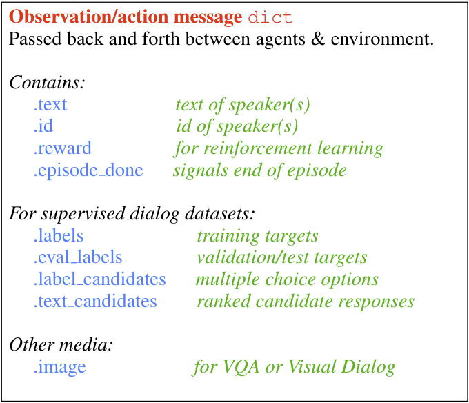

Intro to ParlAI¶
Authors: Alexander Holden Miller, Margaret Li, Jason Weston
What is ParlAI?¶
ParlAI is a python-based platform for enabling dialog AI research.
Its goal is to provide researchers:
a unified framework for sharing, training and testing dialog models
many popular datasets available all in one place, with the ability to multi-task over them
seamless integration of Amazon Mechanical Turk for data collection and human evaluation
integration with Facebook Messenger to connect agents with humans in a chat interface
You can also see the README for more basic info on ParlAI, or continue reading this document.
Core Concepts¶
We’re going to introduce some of the terminology we use in the ParlAI framework. In ParlAI, we call an environment a world. In each world, there are agents. Examples of agents include models and datasets. Agents interact with each other by taking turns acting and observing acts.
To concretize this, we’ll consider the train loop used to train a Transformer ranker on the Twitter dataset in our Quick Start. We call this train environment a world, and it contains two agents - the transformer model and the dataset. The model and dataset agents interact with each other in this way: the dataset acts first and outputs a batch of train examples with the correct labels. The model observes this act to get the train examples, and then acts by doing a single train step on this batch (predicting labels and updating its parameters according to the loss). The dataset observes this act and outputs the next batch, and so on.
That’s just a quick overview. Now let’s take a more detailed look at these concepts and how to use them.
Agents¶
The most basic concept in ParlAI is an Agent. An agent can be a human, a simple bot which repeats back anything that it hears, your perfectly tuned neural network, a dataset being read out, or anything else that might send messages or interact with its environment.
Agents have two primary methods they need to define:
def observe(self, observation): # update internal state with observation
def act(self): # produce action based on internal state
observe() takes as input an observation dict, which is usually the result of an action taken by another agent,
and updates this agent’s internal state accordingly.
act() produces an action from the agent. For a dataset agent, this might increment a counter for examples seen and
return the next batch of examples. For a neural net agent, this could be a train step or eval step.
Observations¶
Observations are what we call the objects returned by an agent’s act function and are so named because they are input to other agents’ observe() functions. This is the primary way messages are passed between agents and the environment in ParlAI. Observations are usually in the form of python dictionaries containing different types of information.
The observations documentation goes into more detail about each field, but the following table shows the basics.
{kind=link}
All of these fields are technically optional, and each task should use them according to what kind of information is available in that task (for example, not all tasks contain explicit rewards, or a set of candidate labels to choose from).
Dataset-specific fields are available in some cases in order to support
reproducing paper results. For example, SQuAD has an answer_starts field,
which is available in the “squad:index” task.
Note: during validation and testing, the labels field is renamed
eval_labels–this way, the model won’t accidentally train on the labels,
but they are still available for calculating model-side loss.
Models can check if they are training on a supervised task in the following manner:
is_training = 'labels' in observation
Teachers¶
A Teacher is special type of agent. They implement the act and observe
functions as all agents do, but they also keep track of metrics which they
return via a report function, such as the number of questions they have posed
or how many times those questions have been answered correctly.
Datasets and tasks typically implement a subclass of Teacher, providing functions which
download the dataset from its source if necessary, read the file into the
right format, and return an example with each call to the teacher’s act
function.
Observations exchanged between a student (model) Agent and a bAbI task Teacher might look like the following dicts:
Teacher: {
'text': 'Sam went to the kitchen\nPat gave Sam the milk\nWhere is the milk?',
'labels': ['kitchen'],
'label_candidates': ['hallway', 'kitchen', 'bathroom'],
'episode_done': False # indicates next example will be related to this one
}
Student: {
'text': 'hallway'
}
Teacher: {
'text': 'Sam went to the hallway\nPat went to the bathroom\nWhere is the milk?',
'labels': ['hallway'],
'label_candidates': ['hallway', 'kitchen', 'bathroom'],
'episode_done': True
}
Student: {
'text': 'hallway'
}
Teacher: {
... # starts next episode
}
...
Worlds¶
Worlds define the environment in which agents interact with one another. Worlds
must implement a parley method. Each call to parley conducts one turn of interactions typically containing
one action per agent.
A simple world included in ParlAI, which all of our currently included tasks use,
is the DialogPartnerWorld. DialogPartnerWorld is initialized with one task teacher agent and one student agent.
With each call to parley, one exchange is done between the agents, in
the following manner:
query = teacher.act()
student.observe(query)
reply = student.act()
teacher.observe(reply)
Another simple world we include is MultiAgentDialogWorld, which is similar but generalizes this to cycle between any number of agents in a round robin fashion.
Advanced Worlds¶
We also include a few more advanced “container” worlds: in particular, we include both a
BatchWorld and a HogwildWorld. These worlds are automatically used when either
the numthreads parameter or the batchsize parameter are set to greater
than one. Some extra functionality is needed to get these to work on the side
of both the teacher and the learner, but we’ll cover that in a different
tutorial (see: Data Handling, Batching, and Hogwild).
Using ParlAI¶
Concepts in Action: Simple Display Data Script¶
Now that we understand the basics, let’s set up a simple script which displays
any specified task. A complete version of this for utility is included
at parlai/scripts/display_data.py, but we’ll do this from scratch
to demonstrate the concepts we just introduced.
We’ll create a new agent class and implement observe() and act() functions so that, in a world with a task teacher, it will observe the data outputted by the task teacher, save the data as its last observation, and then act by printing the label in its observation.
First, a few imports:
from parlai.core.agents import Agent
from parlai.core.params import ParlaiParser
from parlai.core.worlds import create_task
The Agent class will be the parent class for our own agent.
The ParlaiParser provides a set of default command-line arguments and
parsing, and create_task will automatically set up the appropriate world and
teacher for any task available within ParlAI that we choose.
We define our agent (which we name RepeatLabelAgent):
class RepeatLabelAgent(Agent):
# initialize by setting id
def __init__(self, opt):
self.id = 'RepeatLabel'
# store observation for later, return it unmodified
def observe(self, observation):
self.observation = observation
return observation
# return label from before if available
def act(self):
reply = {'id': self.id}
if 'labels' in self.observation:
reply['text'] = ', '.join(self.observation['labels'])
else:
reply['text'] = "I don't know."
return reply
Now that we have our our agent, we’ll set up the display loop.
parser = ParlaiParser()
opt = parser.parse_args()
agent = RepeatLabelAgent(opt)
world = create_task(opt, agent)
for _ in range(10):
world.parley()
print(world.display())
if world.epoch_done():
print('EPOCH DONE')
break
And that’s it! The world.display() cycles through each of the world’s agents and displays their last action. However, if you want to access the data directly without calling world.display(), you could access world.acts directly:
parser = ParlaiParser()
opt = parser.parse_args()
agent = RepeatLabelAgent(opt)
world = create_task(opt, agent)
for _ in range(10):
world.parley()
for a in world.acts:
# print the actions from each agent
print(a)
if world.epoch_done():
print('EPOCH DONE')
break
Validation and Testing¶
During validation and testing, the ‘labels’ field is removed from the observation dict. This tells the agent not to use these labels for training–however, the labels are still available via the ‘eval_labels’ field in case you need to compute model-side metrics such as perplexity.
In these cases, our RepeatLabel agent no longer has anything to say. For datasets which provide a set of candidates to choose from (‘label_candidates’ in the observation dict), we can give our agent a chance of getting the answer correct by replying with one of those.
Let’s modify our agent’s act function to select a random label candidate when the labels aren’t available:
import random
def act(self):
reply = {'id': self.id}
if 'labels' in self.observation:
reply['text'] = ', '.join(self.observation['labels'])
elif 'label_candidates' in self.observation:
cands = self.observation['label_candidates']
reply['text'] = random.choice(list(cands))
else:
reply['text'] = "I don't know."
return reply
Of course, we can do much better than randomly guessing. In a later tutorial, we’ll set up a better agent which learns from the training data.
Tasks¶
If you run this on the command line, you can specify which task to show by setting ‘-t {task}’ in the following format:
‘-t babi’ sets up the
DefaultTeacherin ‘parlai/core/tasks/babi/agents.py’.‘-t babi:task1k’ sets up the
Task1kTeacherin the babi/agents.py file, which allows you to specify specific settings for certain tasks. For bAbI, this refers to the setting where there are only 1000 unique training examples per task.‘-t babi:task1k:1’ provides 1 as a parameter to
Task1kTeacher, which is interpreted by the Task1kTeacher to mean “I want task 1” (as opposed to the 19 other bAbI tasks).‘-t babi,squad’ sets up the
DefaultTeacherfor both babi and squad. Any number of tasks can be chained together with commas to load up each one of them.‘-t #qa’ specifies the ‘qa’ category, loading up all tasks with that category in the ‘parlai/core/task_list.py’ file.
These flags are used across ParlAI. Here are some examples of using them for displaying data with the existing script display_data:
#Display 10 random examples from task 1 of the "1k training examples" bAbI task:
python examples/display_data.py -t babi:task1k:1
#Displays 100 random examples from multi-tasking on the bAbI task and the SQuAD dataset at the same time:
python examples/display_data.py -t babi:task1k:1,squad -n 100
In the last section, we mentioned that labels are hidden at validation and test time. The –datatype (-dt) flag specifies train, valid or test. These modes can be set from the command line with ‘-dt valid’ / ‘-dt test’. You can also set ‘-dt train:evalmode’ if you want to look at the train data in the same way as the test data (with labels hidden).
ParlAI downloads the data required for a requested task automatically (using the build.py code in the task) and will put it in your –datapath. This is ParlAI/data by default but you can configure this to point elsewhere, e.g. to another disk with more memory. Only the tasks you request are downloaded. Additionally, you could specify -dt train:stream or -dt valid:stream to denote that you want the data to stream online if possible, rather than loading into memory.
You can also specify -dt train:ordered the override the default behavior that data from the train set comes in a random order (whereas valid and test data is ordered by default).
We maintain a complete task list in the code here or in this documentation here. The set of tasks in ParlAI is continually growing from contributors. See this tutorial for making your own tasks.
Training and Evaluating Existing Agents¶
For now, we’ll look at the scripts we’ve provided for training and evaluation: train_model and eval_model. Here are some examples:
#Train a seq2seq model on the "10k training examples" bAbI task 1 with batch size of 32 examples until accuracy reaches 95% on validation (requires pytorch):
python examples/train_model.py -t babi:task10k:1 -m seq2seq -mf /tmp/model_s2s -bs 32 -vtim 30 -vcut 0.95
#Trains an attentive LSTM model on the SQuAD dataset with a batch size of 32 examples (pytorch and regex):
python examples/train_model.py -m drqa -t squad -bs 32 -mf /tmp/model_drqa
#Tests an existing attentive LSTM model (DrQA reader) on the SQuAD dataset from our model zoo:
python examples/eval_model.py -t squad -mf "zoo:drqa/squad/model"
#Evaluate on the bAbI test set with a human agent (using the local keyboard as input):
python examples/eval_model.py -m local_human -t babi:Task1k:1 -dt valid
#Evaluate an IR baseline model on the validation set of the Movies Subreddit dataset:
python examples/eval_model.py -m ir_baseline -t "#moviedd-reddit" -dt valid
#Display the predictions of that same IR baseline model:
python examples/display_model.py -m ir_baseline -t "#moviedd-reddit" -dt valid
The main flags are:
1) -m (-model) which sets the agent type that will be trained. The agents available in parlAI are here. See this tutorial for making your own agents.
-mf (–modelfile) points to the file name of where to save your model.
-t (–task) as described before.
Of course every model has various parameters and hyperparameters to set in general.
Model Zoo
A new feature in ParlAI is that it also now maintains a model zoo of existing model files of agents that have been trained on tasks. See the devoted documentation section or here for details.
The set of agents and models in the model zoo in ParlAI is continually growing from contributors.